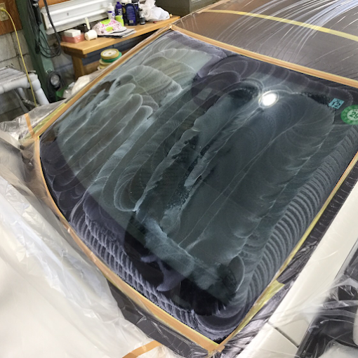

ウインド撥水コート
雨の日の窓まわりも、使い方に合わせて。
窓ガラスの状態や、普段のお手入れ、ご希望の施工範囲を伺います。ボディのガラスコーティングと一緒に相談すれば、作業の順番やお預かりの日程もまとめて考えられます。
HOW WE WORK
ガラスの状態を見て、視界を整える。
窓ガラスの撥水コートは、ガラスの状態やほかの施工との組み合わせを確認してから進めます。掲載写真はフロントガラスの作業中です。
- 01
気になる窓を確認
フロント、サイドなど、雨の日に気になる箇所を伺います。
- 02
ガラス面の状態を見る
汚れや既存の処理を確認し、必要な作業をご案内します。
- 03
撥水コートを施工
施工範囲とお手入れ方法を、作業前にお伝えします。
IN THE WORKSHOP
施工写真を見る
写真を押すと大きく表示できます。

ウインド撥水コートは、ガラスに貼るカーフィルムとは別の施工です。
ほかの施工を見る
YOUR FIRST CONVERSATION
この施工、自分の車にも合う？
車種や気になること、普段の乗り方からお聞かせください。施工名が分からなくてもご相談いただけます。